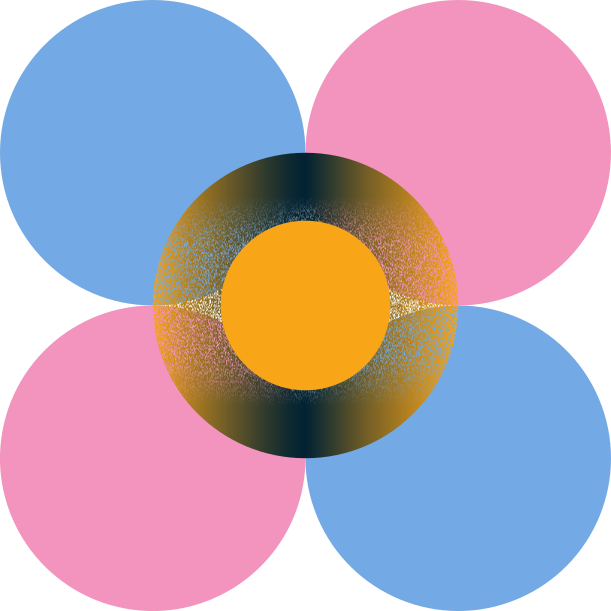
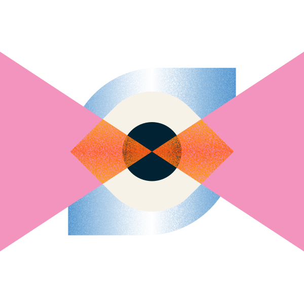
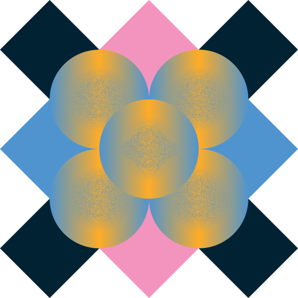

This playbook is for us, the GovTech Consulting Design team. We focus on a specific part of design: discovery and creating the conditions for action. Not building, not developing. We work upstream, where the problem gets defined and the direction gets set. If you’re on the team, this is your document.
Open for a reason
Because good thinking gets sharper with honest reactions. We made it public so anyone can read it, push back on it, or bring it up over a meal. That kind of conversation is exactly what we’re hoping for.
Not a methods guide
You won’t find research techniques or workshop instructions here. What you will find is our point of view: on what design actually is and where it’s going, on why discovery is changing more dramatically than most people realise, on why prototyping means building to test and not building to release, on how the lines between design, product, and engineering are shifting, and on what it means to do all of this in government, for the public, at this particular moment in time.
Always in draft
This is not an excuse to leave things unfinished. It’s a declaration that we are in a moment of genuine flux, learning by doing, testing what we believe, and updating this as we go. Every project is a prototype. So is this.
01Why we exist,and the moment

1.1 Why GovTech
Singapore’s Smart Nation vision called for something deliberate: a centralised digital government capability, built in-house, so that the knowledge and direction of transformation would sit within government — not fragmented across agencies or outsourced away. GovTech was the answer to that call.
Its mandate has always been about more than technology. It’s about what government can be for the people who depend on it — and what kind of future we’re building together.
1.2 The modernisation opportunity
Singapore’s national AI adoption mandate is a structural signal: the rules of what government can build, and how fast, have changed. What once took months can now be prototyped in days. The opportunity to build public services that are genuinely excellent — not just functional — is more within reach than it has ever been.
But the goal is not simply to move faster. It’s to move well — with the discernment and care that public services deserve, because what’s ultimately at stake are the people these services are built for. That means starting with the real problem before committing to a direction, holding the standard for quality when the ability to build is no longer the constraint, and being honest about what deserves focus when more is possible than any team can pursue at once. GTC’s work sets the conditions for how agencies across Singapore develop their own capabilities — which is exactly why it has to be done carefully and well.
1.3 The A.I. reality
The conditions around us have changed, and they have changed fast. As part of a government with the foresight to lean into this moment, we have both the position and the responsibility to lead the way. Not to wait and see, but to experiment, learn, and set the standard for what design at GTC for the public can be.
AI is reshaping what is possible for design, and you will see that reflected in how we work. We acknowledge it as a reality, not a prescription. We won’t tell you which tools to use, because the tools themselves are evolving faster than any document can capture. What we will say is: the craft is evolving, and it is on us to evolve with it. Good design is still about people. That hasn’t changed. How we get there has.
The craft is evolving, and it is on us to evolve with it. Good design is still about people. That hasn’t changed. How we get there has.
02Our point of view

Every team has a point of view, whether it’s written down or not. Ours starts with a belief about what’s possible here — not just to do more of what’s already happening, but to push what public service design can be, how it gets built, how it improves over time, and to help shape that across an entire system that touches every life. That’s the scale of the opportunity. Build without finding out what’s true, and you’ll solve the wrong problem with confidence. Find out what’s true without building to test it, and you’ll leave a stack of insights that never changed anything. Both happen all the time. Neither has to. This is how we intend to work differently.
2.1 Designing for everyone
Government services exist to serve the population — all of it. Not a target market, not a user segment — everyone, including those hardest to reach and those with no alternative. That’s not a limitation. It’s what makes this work matter at a scale that’s genuinely rare. The opportunity to improve a service here is an opportunity to improve life for everyone who depends on it.
That reach comes with a specific set of realities: policy frameworks that govern what can be built, governance structures that shape how decisions get made, and an accountability to the public that runs through every choice we make. Understanding those realities — and working within them rather than around them — is the foundation of everything that follows.
Working inside that system means understanding how it’s built. These are the realities we design within.
Fairness by design
Government holds itself to a high standard — consistent, transparent, predictable, accessible, and accountable — because public systems have to work for everyone, without exception. A service that works for most but fails the vulnerable isn’t meeting that bar. Unlike most products, government has no competition: if a service fails you, there’s nowhere else to go. That’s why Singapore’s MDDI mandate of digital first, but not digital only matters as a design principle, not just a policy direction — digital is the default, but every service decision has to account for who might be left behind. Designing for those exceptions isn’t a concession. It’s what fairness actually looks like in practice.
Source: mddi.gov.sg
Siloed by mandate, experienced as one
Each agency has its own remit, its own rules, its own definition of success. But citizens experience one life, not separate agencies. Sitting where we do, working across them, we have a rare opportunity: to see the whole person and connect dots that institutional silos can’t. That’s something we should actively strive for.
Policy, procurement, governance — these are the brief
Policy governs what can be built. Procurement governs how it gets built. Governance shapes who decides. These aren’t obstacles — they’re the actual shape of the problem. Two things follow. We still need to prototype and test, which means building the right sandboxes inside these constraints, not despite them. And clearing them isn’t the finish line. A service can satisfy every requirement and still fail the people using it. We design to a higher bar than compliance.
We design for the people who deliver, not just the people who use
Every public service has two sets of users: the citizens who depend on it, and the officers who deliver it. The empathy we bring to the front has to extend to the back. Officer workflows, the tools they’re given, the friction they live with daily — all of it shapes what the public ends up experiencing. A service can’t be better than the system the people inside it are working with.
2.2 What we believe
Working in that context, with those stakes and those constraints, has shaped what we believe about how to do this work well.
Discovery is non-negotiable. Building without finding out what’s true first is how teams solve the wrong problem with confidence. The depth and shape of discovery flexes with the project — but skipping it is never the right call.
Prototyping moves upstream. Because the cost of building has dropped dramatically, prototypes no longer belong only in the build phase. They belong alongside discovery, generating real signal earlier and de-risking the decisions that matter most.
Capability building is part of the work. Our job isn’t only to deliver products — it’s to leave partners better equipped than we found them. That means building alongside people, not just for them.
Skills are shared, not owned. Service design isn’t only for designers. PRDs aren’t only for product managers. The boundaries between roles are becoming more permeable — and that’s a feature, not a problem.
What we’re still working out
The boundaries between design, product, and engineering are shifting — and we think that’s exciting. There’s no settled answer yet on where those lines should sit, and we’re not waiting for one. We’re experimenting our way toward it, together, and we expect what we learn to change how we work.
2.3 What success looks like
Success here doesn’t look like conversion rates or retention metrics. It looks like working on the right problem in the first place.
The pace of building has accelerated dramatically. But speed applied to the wrong problem is still the wrong problem — just arrived at faster. The most valuable thing we can do is slow down long enough to ask: is this actually the thing worth solving?
That takes courage in a government context. Bureaucracy has gravity. Norms have history. Success means being willing to push back — because the people these services are built for deserve more than the default.
As part of the Central Modernisation Office, we sit at the intersection of design, technology, and transformation. The platforms and capabilities GovTech has built are real assets — success means bringing them together meaningfully. But at the centre is still a person trying to get something done. Design is how we keep them there.
Concretely, that means:
The right problem is named. Not the stated one, not the comfortable one — the actual one.
The brave call was made. Assumptions challenged, norms questioned, the brief interrogated before accepted.
Technology and modernisation worked for people. The right capabilities were brought in at the right time — not for their own sake, but in service of the people the product was built for.
The agency can keep going without us. Momentum built, not dependency.
We modelled what good looks like. How we work becomes the template others carry forward.
03Stages of a project

Partnership is how we work. We work with agencies as partners, not service providers. Agencies bring the domain knowledge and mandate; we bring the discovery capability, technology and product domain. Together, we build something that creates impact for the public. That spirit of co-creation shapes everything about how we show up from day one.
3.1 How we engage
Types of projects we take on
We work on modernisation and discovery projects where there is a genuine problem worth solving, a partner ready to work alongside us, and enough clarity to get started. We begin from a question mark and work toward a point where a build can begin with real confidence. That journey, done well, is where the most meaningful work happens.
Before committing, we explore the funding landscape together: whether budget has been secured, what it covers, and whether it fits the scope. Getting this clarity early sets everyone up for a more honest, energised, and productive engagement.
Examples of projects we take on:
An agency has a legacy system that is failing users and officers. We come in to discover what is actually broken, map the full service, and prototype what a better version could look like.
A ministry wants to understand whether a new policy can be delivered digitally. We run discovery to validate the need, surface the constraints, and experiment with what a service could be before any build commitment is made.
An agency is streamlining multiple fragmented systems and workstreams into a single platform. The product is new — and so is the way the operation needs to run. We help them discover not just what to build, but how the people, processes, and workflows around it need to be rethought alongside it.
A note on research-heavy projects: There are exceptions. Some projects warrant a longer, deeper research phase before prototyping becomes possible — particularly where the system is complex, the stakeholders are many, or the problem space is genuinely unclear. That is fine. What matters is that the research connects to something — that it is building toward discovery and action, not sitting on its own as a deliverable.
What we don’t do
We do our best work when we are part of shaping the problem from the start. We are not a vendor executing a brief, and we are not here to create dependency. We are here to build capability alongside the people we work with, so that when we leave, the work continues and gets better. Concretely, this means we do not:
Take over the entire project. We are a consulting and discovery team. We are not the permanent design or engineering function for an agency. Our role is to accelerate and enable, not to run things indefinitely.
Write funding papers or investment proposals. Helping an agency make the internal case for a project is not within our scope. We can inform that thinking, but writing IB papers or procurement documents is not what we are here to do.
Run isolated research tasks without a discovery arc. We are not a research-for-hire team. If an agency needs someone to run a user test and hand back a report, that is not us. Research has to connect to discovery, hypothesis, and action — otherwise there is no point.
Deliver a prototype and walk away. Prototyping without the full discovery arc — and without building the agency’s capability to take it forward — is not the model. A prototype handed over with no context, no roadmap, and no team to own it will go nowhere.
Design without being involved in the discovery. If the solution has already been decided and we are being asked to make it look good, that is not a project we can add real value to.
Where we enter
The earlier we are part of shaping the problem, the more value the work creates. We are transparent about where we enter every engagement, so both sides start with a shared and realistic picture of what is possible.
Entering too late compromises the work. If the direction has already been locked, if the scope has been fixed without discovery, or if the agency has already committed to a build — our ability to do this well is significantly reduced. This is worth naming clearly at the start of every engagement.
What an ideal project team looks like
The question is never whether the agency has a designer or an engineer. We can fill those gaps and we are glad to. What makes a project thrive is having the right people engaged on the agency side: a clearly identified business owner, a sponsor with decision-making authority, and a shared sense of what success looks like. From day one, we look for people on the agency side who can grow into ownership over time. Capability transfer does not happen at handover. It starts at the beginning.
A risk worth naming: Projects without a clearly identified business owner stall. We have seen this play out — when no one on the agency side has the authority to make decisions or the mandate to drive the work, even the best discovery and prototyping work struggles to land.
Where we exit
There are two natural exit points: after experimentation, with a validated high-confidence roadmap in the agency’s hands; or after build and delivery, before ongoing support. A third path stays embedded through the support phase for projects that call for it.
We do not leave teams hanging. Our intention is always to set up the capability for the team to carry on — and that work starts from day one, not at the point of handover.
3.2 Qualifying
Assessing the ask, framing the problem, scoping the engagement. Deciding whether the work is relevant, clear enough to take on, and whether we’re the right team for it.
What happens
We read the ask, understand enough about the context to have a view on it, and decide whether this is work we should take on. The depth of this stage flexes with the project. Sometimes it’s a single conversation. Sometimes it’s a few weeks of light sensing before we commit.
Activities
Conversations with the partner to understand the ask
Problem reframing sessions
Internal discussions on fit and team shape
Scoping the engagement
Outputs
Engagement brief
Project plan
One-pager with problem framing and recommendation
Outcomes
The partner walks away with a clearer read of their own problem than when they walked in.
We and the partner share the same picture of the work — what we’re doing together, and what we’re not.
The team knows its shape: who’s in, what each person holds.
Both sides have a directional sense of effort and timeline, honest about where confidence is still low.
A real decision has been made. We’ve committed, or we’ve declined, with reasoning.
Critical callouts
The stated ask is almost never the whole problem. Our job here is to hear it without accepting it at face value.
Not taking on a project is a legitimate outcome. If it’s not the right work for us, or we’re not the right team, saying that clearly is more useful than a polite yes.
Qualifying isn’t discovery. We’re not trying to solve the problem here — we’re trying to understand it well enough to know if we should.
Budget, scope, and timeline conversations at this stage should focus on clarifying and aligning what’s needed for Stages 2 and 3. High-confidence sizing for the build typically only emerges at the end of Stage 2 or 3. Naming this up front prevents misplaced expectations later.
3.3 Discovery
Every project begins with a challenge, and an opportunity to get to the real truth of it. We help agencies navigate complex problem spaces and validate the true needs of citizens and end-users, building strategic confidence before any solution is proposed. In government, the ground truth is often hidden beneath layers of interpretation. GTC’s position lets us surface it fully and honestly, so that every decision that follows is outcome-focused from the start. What we uncover may point to a new product — and every new product brings with it new processes, new roles, and new ways of operating that need to be understood and designed alongside it.
The value of discovery
The speed of building has collapsed. But the cost of building the wrong thing hasn’t.
From assumption to insight. We find out what people actually need — not what we assume they want, or what someone in a meeting thinks is the problem.
De-risk your investment. Validate before you commit. Discovering the wrong direction early costs far less than building it.
Focus on what matters most. Rather than trying to solve everything at once, we identify the highest-impact problems to tackle first and work outward from there.
Build something that delivers. Not just a product that functions — one that genuinely improves the experience for the people who use it and the people who run it.
Technology has changed what discovery can be. Prototyping and testing early is now fast, accessible, and within reach of the same people running research. Discovery is no longer just research leading to insights. It is research and experimentation running together — which is why it has two subphases that must work in tandem.
Subphase 1 — Uncover what is true
We go deep into the problem before any solution is proposed. This is where we build a shared, grounded understanding of the system, the people, and the constraints, so we know exactly what we are tackling before we commit to a direction. From what we uncover, we identify and prioritise the critical use cases with the highest frequency of use, highest impact, and most direct connection to the core problem.
What happens
We work to build the fullest possible picture of the problem before any solution is proposed. Discovery here can take two forms, and both are worth understanding from the start — so that when they run together, they actively inform each other.
The ground truth is often very different from what reaches a decision maker.
Experience discovery — led by design
Align on goals and outcomes with the organisation and agency teams
Analyse the landscape and draw on academic and sector research
Run focus groups, qualitative interviews, field studies, usability testing, and quantitative surveys with citizens and end-users
Synthesise insights, run co-creation workshops, and define user archetypes
Develop a clear value proposition and product strategy, expressed through user journey maps and service blueprints
Map the full operational picture — the service, the workflows, the roles, and what the before and after of digital looks like for the people running it
Technical discovery — led by engineering, often in parallel
Uncover the tech architecture, legacy system constraints, and technical risks
Map data pipelines, APIs, and integration dependencies
Identify what exists, what needs to be built, and what may slow things down
Activities
Service mapping and research
Stakeholder and user interviews
Policy and regulatory review
Legacy system and technical discovery (runs in parallel with engineering)
Artifacts
Service map
Research findings
Technical discovery report
Prioritised use case shortlist
Outcomes
The real problem is understood — not the stated one, but the actual one
Value propositions, business case, user needs, and policy implications are all surfaced
Challenges and constraints are named, including technical ones
A clear, defensible view of which use cases to tackle first — and why
The team has a shared picture of what it is actually working on
Critical callouts
Every discovery surfaces trade-offs. In a government context, decisions rarely have clean answers — policy constraints, siloed mandates, competing agency priorities, and resource realities all create tension. Part of the work here is naming those trade-offs honestly so the right people can make informed decisions. This is also where cross-agency complexity becomes visible: we’re not just solving for what’s within one agency’s control, but surfacing what a better, more connected government could look like for the people it serves.
This stage is not about solutions. It’s about making sure the problem is real, understood, and worth solving.
Subphase 2 — Identify what works
In the past, we used to do mockups because we were limited by it. That is now long past. Now when we do prototypes, we do it to validate a hypothesis in the whole system that we are creating.
We grow things, we don’t build them. Building implies a plan, a spec, a defined output. Growing means planting a seed, nurturing it through iterations, and transplanting to production only when it’s ready. Every prototype is expected to fail on the first try — that’s the point. Rapid learning beats slow certainty.
Three things that define this subphase
Rapid iteration. Speed is not a nice-to-have — it is the point.
Prototypes are not production-ready, and they are not supposed to be
Scalability is not the goal — a developer can rebuild a validated prototype production-ready; our value is the idea and the data, not clean code
We aim to get the first prototype in front of real users within three weeks, then iterate in two-week cycles
The goal is a high-confidence roadmap backed by real data and real user feedback, not a polished first attempt
Real validation. True insight comes from testing with the people who will actually use it.
Internal reviews and stakeholder walkthroughs are a start, but they are not validation
Real validation means putting something in front of real users — officers, citizens, or both — in real contexts, and learning from what happens
Every prototype needs a clear hypothesis it is testing
Every prototype needs a clear way to measure whether it worked
Functional prototype. There is a scale of prototype fidelity, and understanding where you are on it matters. Each type has its place — and the goal is always to push toward the right end as the work matures.
Static design. A Figma file or screen layout. Useful for exploring visual direction and early flows, but not testable in any meaningful way.
Interactive mockup. Browser-based, fully clickable, built with synthetic data. Useful for early alignment and fast to produce — but it cannot replace a real workflow, and the signal it generates is limited.
Functional prototype. Built with real or synthetic data that mirrors the real schema, testable in a real workflow, and capable of generating signal you can act on. Real users can operate it for a few days and give feedback that actually means something. This is what we are aiming for.
Prototype the operation. Digital is only one layer of what we are building. The operations, workflows, and policy integration that sit around it need to be prototyped too — not handed off to others to figure out later.
Prototype new operational concepts and workflows alongside the digital product
Collaborate across digital, ops, and policy rather than working in sequence
Avoid the waterfall handoff where digital ships and ops scrambles to catch up
What gets in the way — and how we work through it
Pushing into functional prototyping is not always straightforward, and that is worth naming honestly. The constraints are real — sensitive data classifications, API access, data pipelines that are not yet in place. We treat these as challenges to actively work through, not reasons to stay at the interactive mockup stage.
On the team side: Not every designer needs to build at the functional prototype level — but the team needs to be able to. That is exactly why creative technologists work alongside designers here. The same way an engineering team has front-end, back-end, and QA — not every person does everything, but together the team can.
On the data side: When real data is not yet accessible, synthetic data that mirrors the real schema is a strong and legitimate starting point. It gets us close enough to test what matters, while we work toward real access in parallel.
What happens
We move from knowing what is true to finding what works. Small teams ship 1–3 rapid prototypes per project — working demos, not wireframes or slide decks — each taking 2–4 weeks. Every round generates real signal from real users, and every round gets us closer to a roadmap we can commit to with confidence.
What gets handed off at the end of this subphase is more than a prototype. It is working code, key decisions documented, lessons learned, real user data, and a high-confidence roadmap. The dev team takes the validated prototype and rebuilds it to production standard. That handoff model is intentional — our value is the validated idea and the confidence behind it, not production-ready code.
The rapid experimentation cycle
Hypothesis. Start with a clear bet. Based on what we know from discovery, what do we believe could work? Frame it specifically enough that it can be tested — not a vague direction, but a concrete proposition. Just because you can build something does not mean you should. The hypothesis is what gives the prototype its purpose.
Build. Turn the hypothesis into something real — a prototype that works with real or synthetic data, in a real workflow, in front of real users. Not a mockup. Not a click-through. Something that generates actual signal. We build to prove, not just to build.
Test. Put it in front of the people who matter — officers, citizens, or both. Observe, listen, collect data, then bring what you learn back to the hypothesis and start again.
Each cycle sharpens the picture. What was unclear becomes clearer; what was assumed gets confirmed or challenged. Failed prototypes teach as much as successful ones — failure is learning, not a setback. The loop continues until the evidence is strong enough to commit, and that shift from experimenting to building is a moment worth marking deliberately.
We build to prove, not just to build.
Activities
Hypothesis shaping
Shipping 1–3 rapid prototypes per project (2–4 weeks each, max 2 people)
Testing with real users — officers, citizens, or both
Iterative rounds of experiment, learn, refine
Artifacts
Working prototype code
Key decisions made and lessons learned (including what failed and why)
Real user data and feedback
High-confidence roadmap
Outcomes
Assumptions are tested against reality, not held as givens
The roadmap is built on confidence, not guesswork
The team knows what works — and what doesn’t — before committing to build
Both officer and citizen perspectives have shaped what gets taken forward
The prioritised use cases may expand or shift as experimentation reveals new insight
Critical callouts
This is a loop, not a step. Expect multiple rounds of hypothesis → build → test → refine before reaching confidence.
Prototypes are built to learn, not to ship. Fidelity increases as confidence grows, not the other way around.
Testing should include both the people who use the service and the people who deliver it.
If a team has no appetite to learn from failure, the prototypes won’t do their job.
3.4 Building & delivering
Note: the team hasn’t run a full project through this stage yet. What follows draws on collective external experience and will be refined as we learn from our own projects.
Discovery is done and confidence is earned. The team has made a deliberate decision to move from experimenting to building — that shift is worth naming clearly when it happens.
This stage is predominantly engineering-led. Design’s role shifts from shaping the problem and running experiments to maintaining quality, supporting the build, and ensuring what gets shipped stays true to what was validated. Testing and iteration don’t stop here — they continue in parallel. The question changes from “does this work?” to “how do we build it well and get it into people’s hands?”
Modernisation is iterative by nature — not a single arc, but a series of slices. As one slice is built and delivered, the next begins: another round of discovery, another hypothesis, another experiment before the next build. And with AI accelerating what’s possible, these cycles run faster than ever — tighter loops, quicker experiments, shorter paths from insight to something real. The loop running again is not a sign something went wrong — it is exactly how iterative modernisation moves.
What we think happens here
Sprint-based build and delivery cycles, led by engineering
Design working alongside the build — not ahead of it, not behind it
Continuous testing with real users as features ship
Design QA to ensure what gets built matches the intent
Iterative experimentation continuing in parallel — potentially looping back into discovery as the project tackles the next slice of modernisation
Capability building continues — the agency team grows in confidence through the build
What gets handed over
Shipped product increments
Updated roadmap
Documentation and release notes
3.5 Support & maintenance
Note: our involvement at this stage is expected to be minimal. This section will be kept brief until we have more direct experience to draw from.
By the time a product reaches support and maintenance, the agency team should be ready to own it. Our role here is to support that transition and close the engagement well — not to run the product for them.
What we think happens here
Light-touch support as the agency team finds their footing
Monitoring live usage and flagging anything that needs attention
A structured retrospective — reflecting on what the full engagement taught us and what we carry into the next project
What gets handed over
Handover documentation
Exit summary
Retrospective notes
For each stage, we capture
What happens (a short narrative); Activities and Outputs (side-by-side — the work, and the artefacts); Outcomes (what changes because of the stage); and Critical callouts (mindsets, permissions, and constraints worth naming). A lean core for every stage — Discovery gets deeper treatment given its centrality to the point of view.
3.6 Capability building
A parallel workstream that runs from day one — and one of the most lasting contributions GTC can make.
Capability building is not a handover activity. It is one of the most meaningful things we do. From day one, it runs in parallel with every stage of the project — because a product that works and leaves a team fully equipped to grow it is what real transformation looks like. As part of the Central Modernisation Office’s broader modernisation agenda, this is one of the most lasting contributions GTC can make.
Beyond building the team, we want to make sure what we leave behind is set up to thrive. That means the growing team has a clear vision and strategy to rally around, an agreed operating model that sets them up for how they work best, and the right metrics and value-realisation frameworks so they can see and demonstrate the impact of what they are running.
There are two exciting dimensions of capability to build: the product team that designs, builds, and iterates on the service, and the operation team that runs and sustains it.
Product team
Building the right product team on the agency side is where the long-term value of the work truly takes root — and as partners, it is something we shape together from day one. We work with our partners to identify and grow the design capability they need — not just for the project, but for everything that comes after. There are two paths to building that team, and both are worth exploring early.
When identifying the right people, we look for more than just current skill level. The key criteria we consider:
Mindset fit. A genuine curiosity about the problem, openness to working in new ways, and a collaborative instinct that makes co-creation possible.
Readiness to evolve. A willingness to grow with the work — to pick up new methods, embrace new ways of designing, and adapt as technology changes what design can do.
Domain knowledge. An understanding of the agency’s context, systems, and users that is hard to bring in from the outside.
Potential for ownership. The capacity and ambition to eventually lead the work, not just contribute to it.
People on the ground (preferred). Where possible, we look for existing agency staff who meet these criteria and have the potential to grow into design, product, or engineering roles. They already carry invaluable domain knowledge and context that is hard to replicate. Spotting them early and bringing them into the work from the start means capability builds naturally and organically alongside the project — and by the time we leave, they are ready. The practical considerations are worth getting ahead of early: clearing bandwidth from BAU responsibilities and getting the right approvals for their involvement. The sooner these conversations happen with the agency, the smoother the path.
Bringing in new people. When existing staff cannot be redeployed, bringing in fresh talent is a great opportunity to build exactly the capability the project needs. This calls for an early conversation around manpower: does the agency have MMF allocation to hire? If not, what are the options — augmented resources, contractors, or a longer-term GovTech commitment? Getting this clarity early means the agency is ready to move when the time comes.
Operation team
A successful product needs more than a great team to build it — it needs a team ready to run it. New operational roles are often part of the picture: people who review, manage, issue, and maintain the system day to day. This is where change management comes in, and it is just as important as the product work itself.
Change management sits alongside capability building as its own workstream, covering the operational layer: what new roles are needed, how they get funded and hired, whether contractors or partners need to be brought in, and what the longer-term commitment from GovTech looks like beyond GTC’s involvement.
The goal across both dimensions is the same: when we leave, the work continues, the team is confident, and things get better over time.
When we leave, the work continues and gets better.
PROLOGUE
For us, the GTC Design Team
This playbook is for us, the GovTech Consulting Design team. We focus on a specific part of design: discovery and creating the conditions for action. Not building, not developing. We work upstream, where the problem gets defined and the direction gets set. If you’re on the team, this is your document.
Open for a reason
Because good thinking gets sharper with honest reactions. We made it public so anyone can read it, push back on it, or bring it up over a meal. That kind of conversation is exactly what we’re hoping for.
Not a methods guide
You won’t find research techniques or workshop instructions here. What you will find is our point of view: on what design actually is and where it’s going, on why discovery is changing more dramatically than most people realise, on why prototyping means building to test and not building to release, on how the lines between design, product, and engineering are shifting, and on what it means to do all of this in government, for the public, at this particular moment in time.
Always in draft
This is not an excuse to leave things unfinished. It’s a declaration that we are in a moment of genuine flux, learning by doing, testing what we believe, and updating this as we go. Every project is a prototype. So is this.